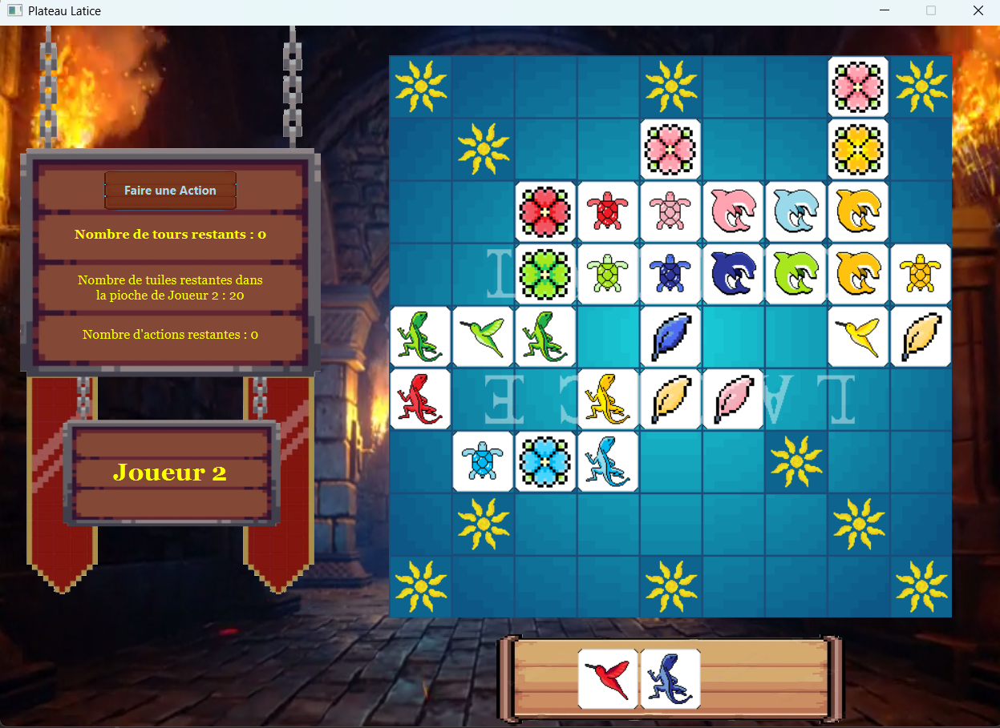
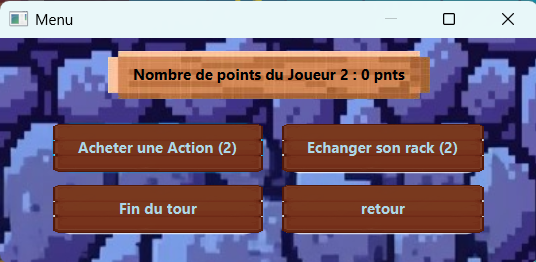
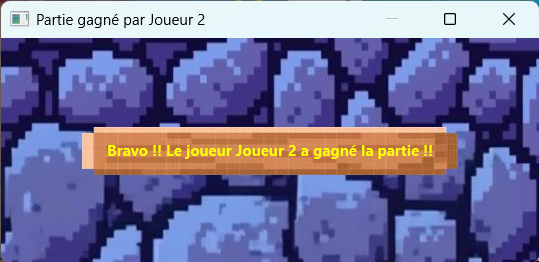

Projet : Latice

Contexte du projet
Projet réalisé dans le cadre d’une SAE de 1ère année du BUT Informatique. Objectif : recréer le jeu de plateau Latice en Java et JavaFX avec interface jouable.
Objectifs
- Reproduire fidèlement les mécaniques du jeu Latice.
- Développer une interface graphique complète en JavaFX.
- Gérer les interactions, animations et règles de scoring.
- Proposer une expérience utilisateur fluide.
Mon rôle dans le projet
Dans une équipe de 3 personnes, j’ai été responsable de :
- la création complète de l’interface JavaFX ;
- la gestion des événements utilisateurs ;
- l’intégration des sons (achats, victoire, musique) ;
- la mise en place du fond animé ;
- la synchronisation logique/affichage.
Fonctionnalités principales
Plateau de jeu
Aperçu du plateau en fin de partie :

Système de points
- Case soleil : +2 points
- Double : +1 point
- Triple : +2 points
- Latice : +3 points
Actions possibles
- Acheter une action
- Échanger son rack
- Passer son tour
- Ouvrir/fermer le menu des actions

Fin de partie

Ambiance sonore et visuelle
- Musique dynamique évolutive.
- Vidéo de fond animée en boucle.
Livrables
- Interface JavaFX complète
- Gestion des règles et du scoring
- Captures d’écran
- Code source commenté
- Intégration audio/vidéo
- Lien GitHub du projet
Compétences du BUT démontrées
- C1 – Développement d’application : Java, JavaFX, gestion d’événements.
- C2 – Optimisation : organisation du code, gestion des ressources.
- C5 – Conduite de projet : répartition des tâches, respect des délais.
- C6 – Collaboration : travail en équipe, Git.
Apprentissages Critiques (AC) démontrés
- AC11 — Implémenter des conceptions simples (logique du jeu, règles).
- AC12 — Élaborer des conceptions simples (structure MVC simplifiée).
- AC14 — Développer des interfaces utilisateurs (JavaFX complet).
- AC22 — Utiliser des algorithmes adaptés (scoring, placements).
- AC51 — Organiser un projet (répartition des tâches).
- AC52 — Travailler en équipe (3 développeurs).
- AC61 — Utiliser des outils collaboratifs (Discord, Trello).
- AC62 — Versionner du code (GitHub).
Analyse réflexive
Ce projet m’a permis de comprendre la structure d’une application JavaFX et l’importance de séparer logique et affichage. La synchronisation entre actions, règles et interface a été la principale difficulté. J’ai aussi appris à intégrer sons et vidéos de manière performante et à maintenir un code propre en équipe.